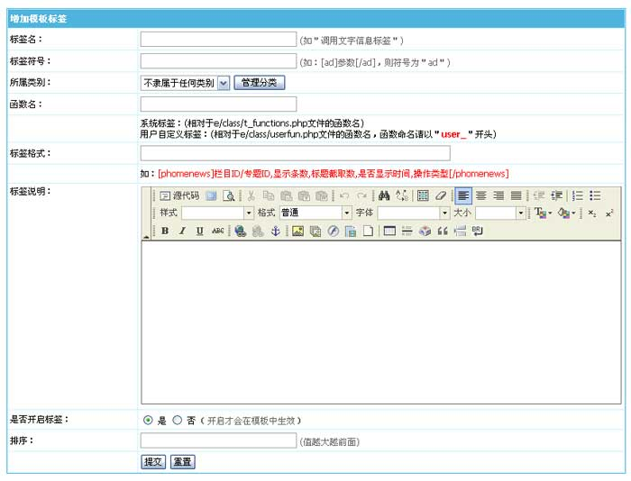

自定义标签
除了系统内置的标签外，用户也可以自定义标签，然后由模板识别增加的标签。
增加自定义标签：
(一)、登录后台，单击“
模板
”菜单，选择“
管理标签
”子菜单，进入管理标签界面：
(二)、进入
管理标签
界面，点击“
增加标签
”按钮，进入增加标签页面：
(三)、进入增加标签页面：

标签名
填写标签名称
标签符号
如：“[ad]参数[/ad]”，则符号为＂ad＂
所属类别
可选择标签的分类
函数名
此标签所用的函数名称(输入你自定义的标签函数名)
系统标签：(相对于class/t_functions.php文件的函数名)
用户自定义标签：(相对于class/userfun.php文件的函数名，函数命名请以＂user_＂开头)
标签格式
如：[ecmsinfo]栏目ID,显示条数,标题截取数,是否显示栏目名,操作类型,模板ID,只显示有标题图片[/ecmsinfo]
标签说明
此标签的参数介绍。
是否开启标签
开启才会在模板中生效
排序
设置标签查看列表的显示顺序
(四)、标签增加完毕后，即可直接在各个模板中使用与调用数据。
相关链接：
1、
帝国网站管理系统程序扩展变量说明